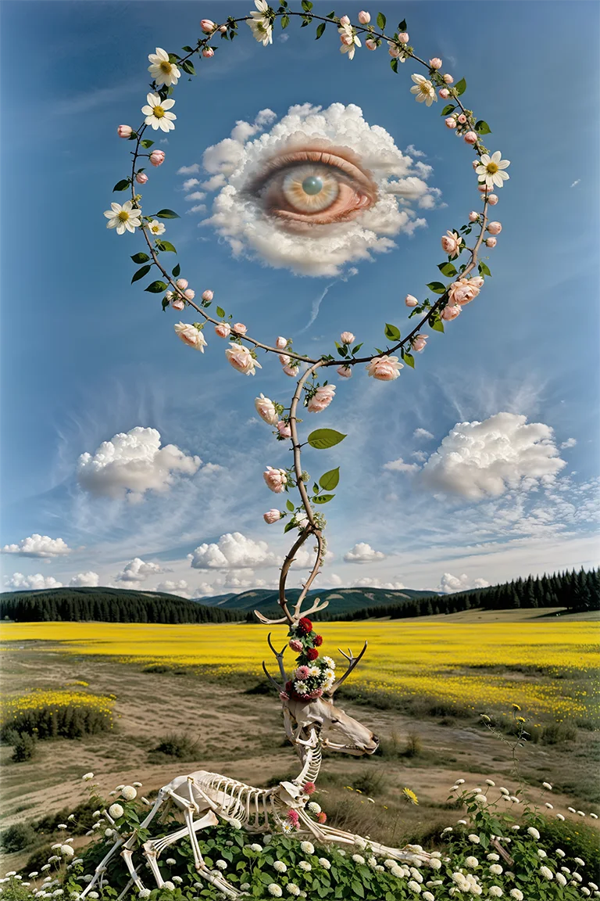

Source Code · «Исходный код»
Saint Petersburg · White Rainbow, New Holland · 7 March — 7 April 2024
Wheel of Fortune.
Source Code brought together neural-network artworks by students, teachers and co-founders of AI Uni. The shared theme was the major arcana of Tarot, reimagined through generative art.
I presented Wheel of Fortune. A cycle unfolds between earth and sky: a skeleton forms the base of a flowering wreath, while an eye among the clouds watches fortune and misfortune, life and death. Even a dark state can give rise to a new beginning.
Photos and Images
